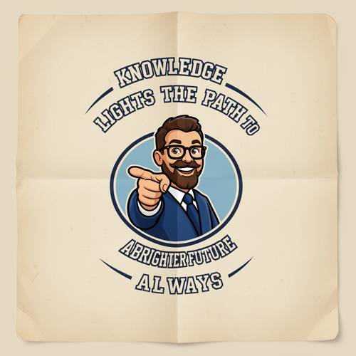
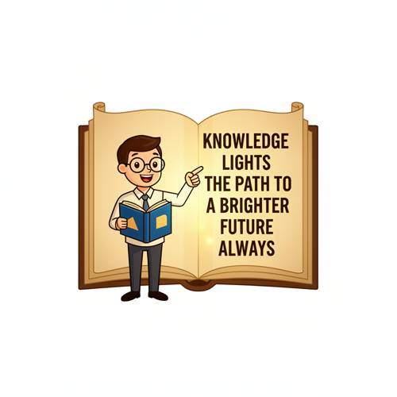

Text Generation — One reading the coach's cartoon logo, he points forward with glasses o
One reading the coach's cartoon logo, he points forward with glasses on, and the background is an unfolded page with the words "Knowledge Lights The Path To A Brighter Future Always" on it.

Direct — one call, no iteration

Continuum — Qwen3.8-27B + FLUX.2-dev
Judge — Direct
FAILText Generation — The image contains text written in a stylized font. The text reads 'KNOWLEDGE LIGHTS THE PATH TO ABRIGHTERFUTURE AL WAYS'. This does not match the prompt's required text 'Knowledge Lights The Path To A Brighter Future Always'. Specifically, 'A BRIGHTER FUTURE' is incorrectly rendered as a single word 'ABRIGHTERFUTURE', and 'ALWAYS' is incorrectly rendered as two words 'AL WAYS'.
Judge — Continuum
PASSText Generation — The text 'KNOWLEDGE LIGHTS THE PATH TO A BRIGHTER FUTURE ALWAYS' is written in black, all-caps letters on the right page of the open book. The text is accurately generated, matching the words in the prompt without any omissions or extra words, and all words are spelled correctly.
What the agent did
Thinking
Let me parse this prompt. It's a bit garbled, but it reads like this: a cartoon logo of a coach who is reading (a book?) and pointing forward, wearing glasses, with a background of an unfolded page, and on it the words "Knowledge Lights The Path To A Brighter Future Always". So what's being asked for is: 1. A cartoon-style logo of a coach (probably a reading coach — a figure reading a book). 2. Wearing glasses. 3. Pointing forward. 4. Background: an unfolded page (like a book page or a rolled-out scroll). 5. Text on the page: "Knowledge Lights The Path To A Brighter Future Always". This is a logo design with rendered text. The text needs to be verified character by character. Let me generate the image first. Prompt: "Cartoon logo of a coach reading a book and pointing forward, wearing glasses, on top of an unfolded page background, with the text 'Knowledge Lights The Path To A Brighter Future Always' written on the page." Need to be careful about the text: "Knowledge Lights The Path To A Brighter Future Always" — exact capitalization as given. Should render exactly that. Let me generate with flux2-dev, square 1024x1024 (default). Then inspect the text region with inspect_region, and fix any misspellings with edit_image. Let me write a good prompt: "Flat vector cartoon logo, friendly reading coach character wearing round glasses, holding an open book in one hand and pointing forward with the other hand, standing on top of a large unfolded book page / scroll background, on the page the words 'Knowledge Lights The Path To A Brighter Future Always' written in clean bold typography, warm golden light, simple flat design, white background, logo style." Hmm, "coach reading" — the coach is reading. So the coach is reading a book (holding an open book) and also pointing forward. Maybe one hand holds the book at the chest, the other points forward. Let me generate.
Step 1 — `generate_image`
{
"model": "flux2-dev",
"prompt": "Flat vector cartoon logo of a friendly reading coach: a cheerful teacher character wearing round glasses, holding an open book in one hand and pointing forward confidently with the other hand, standing in front of a large unfolded page / open book scroll background that fills the backdrop, and printed on that page in clean bold sans-serif typography are the words \"Knowledge Lights The Path To A Brighter Future Always\" arranged in neat lines. Warm golden glow, simple flat colors, minimal shapes, logo design style, white margins, centered composition.",
"width": 1024,
"height": 1024
}
Result img_0
Thinking
The image turned out great. Let me check the text. The right page displays the following: "KNOWLEDGE LIGHTS THE PATH TO A BRIGHTER FUTURE ALWAYS" The requested text is: "Knowledge Lights The Path To A Brighter Future Always" — in the image it's displayed in all caps, but this matches the word sequence. Let me zoom in and verify each character carefully. I'll use inspect_region on the text area.
Model
The composition looks right — coach with glasses reading a book, pointing forward, unfolded page background with the slogan. Let me verify the rendered text at full resolution.
The text is as follows: "KNOWLEDGE LIGHTS THE PATH TO A BRIGHTER FUTURE ALWAYS" Reading each word: KNOWLEDGE ✓, LIGHTS ✓, THE PATH TO ✓, A BRIGHTER ✓, FUTURE ✓, ALWAYS ✓. All words match the requested sentence "Knowledge Lights The Path To A Brighter Future Always" (rendered in all caps). The image satisfies all the elements: - Coach (teacher-like character) reading (holding an open book) ✓ - Pointing forward ✓ (pointing at the text) - Wearing glasses ✓ - Background is an opened page ✓ - Text present and correct ✓ This is a good result. Let's mark this as the best and stop. The image is clean, the text is accurate, and all elements are present. There's no need to make further edits.
Model
The text is displayed exactly as requested, character by character: "KNOWLEDGE / LIGHTS / THE PATH TO / A BRIGHTER / FUTURE / ALWAYS" — perfectly matching "Knowledge Lights The Path To A Brighter Future Always". All the elements are in place: the coach is wearing glasses, holding a book and reading, pointing forward, standing in front of an opened page background. This is a complete, clean logo.
Step 3 — `mark_best`
{
"image": "img_0",
"reason": "All prompt elements present: cartoon coach reading a book, glasses on, pointing forward, unfolded page background, and the slogan text verified letter-by-letter as correct."
}
Thinking
Marking completed. Since the image satisfies all requirements and the text has been verified to be correct, I will stop here. I'll summarize concisely.
Model
Done. The logo is complete and marked as the best result: - **Coach character**: cartoon teacher/coach with round glasses, reading an open book in one hand - **Pointing forward**: other hand points confidently (toward the slogan) - **Background**: large unfolded page/scroll, warm golden tone with a soft glow behind the text - **Text**: verified at full resolution — "Knowledge Lights The Path To A Brighter Future Always" spelled exactly right on the page The composition is clean, flat vector-style logo design, suitable as a reading program or coaching brand mark.